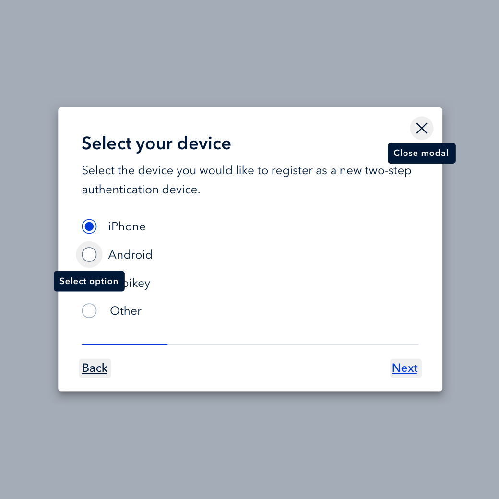

Tables Tab through the rows to expose functionality typically accessed through a hover or click.
Buttons Color contrast ratios are AA compliant, and a new focus outline brings increased access.
Dropdowns A focused first option and clear selection state makes the element more usable.
Multi-Select Input Clear input selections provide ample space for form validation.

Popovers Contextual explanations are legible and navigable by screen readers.
